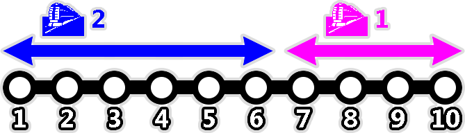
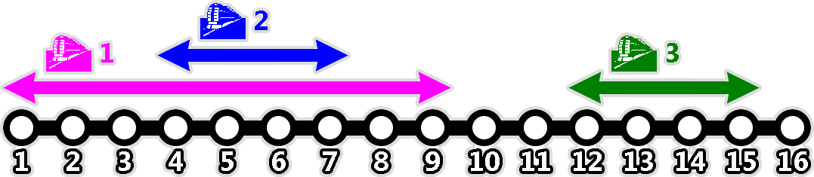

In Jakarta, there are $N$ electric railway train stations lined up in a straight line, numbered from $1$ to $N$.
There are $M$ train routes with their own dedicated tracks, numbered from $1$ to $M$. The $i$-th route consists of four numbers $A_i$, $B_i$, $C_i$, and $D_i$. The train for the $i$-th route travels both ways between stations $A_i$ and $B_i$ ($A_i < B_i$). Each route serves two lines:
To board a train, we need to buy a travel pass which costs $T$ at the departure station. However, inter-train transfer is free of charge. If we end a train trip at a station and immediately board another train from that station, we can still use the same travel pass and there is no need to buy another pass. Upon exiting a station, the travel pass expires and we need to buy a new pass at the next station if we want to board a train again.
Outside the stations, there is also a city bus route which covers all stations. A bus trip from station $x$ to station $y$ costs $K \times |x - y|$.
Bu Dengklek would like to travel from station $P$ to station $Q$ using trains or bus (or a combination of both). What is the lowest possible total cost?
Note: $|x - y|$ denotes the difference of $x$ and $y$.
20 3 10 1 4 18 1 4 11 7 2 20 10 100 17 20 9 7
The input is given in the following format:
N M K T P Q A1 B1 C1 D1 A2 B2 C2 D2 ⋮ AM BM CM DM
Output an integer representing the lowest possible total cost to travel from station $P$ to station $Q$.
10 2 10 1 9 5 7 10 10 8 1 6 8 1
38
The following illustrates the stations and the train routes:

Bu Dengklek would like to travel from station $9$ to station $5$. A possible trip is as follows:
The total cost is $1 + 10 + 8 + 10 + 1 + 8 = 38$.
16 3 3 1 2 14 1 9 2 12 4 7 4 5 12 15 3 1
28
The following illustrates the stations and the train routes:

Bu Dengklek would like to travel from station $2$ to station $14$. A possible optimal trip is as follows:
The total cost is $1 + 4 + 5 + 4 + 9 + 1 + 1 + 3 = 28$.
4 1 10 100 4 1 1 4 1 1
30
The following illustrates the stations and the train routes:
Bu Dengklek would like to travel from station $4$ to station $1$. A possible optimal trip is as follows:
The total cost is $30$.